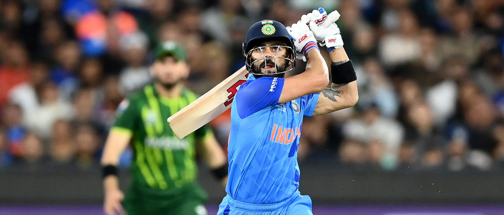
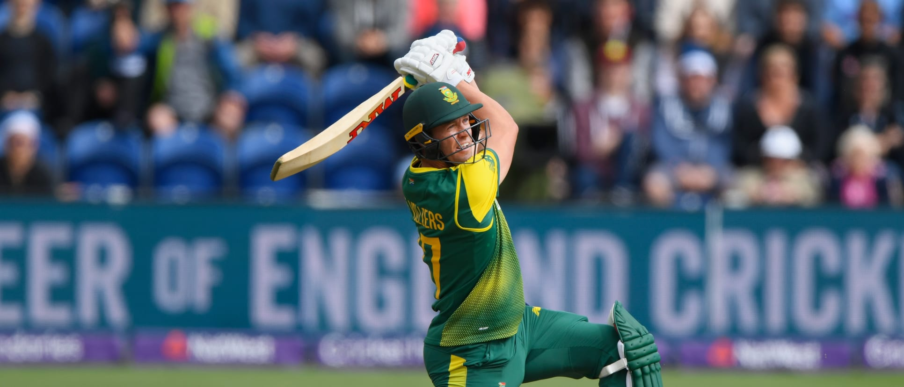

Gentleman's Game
Cricket, often revered as the "gentleman's game," has entrenched itself deeply into the cultural fabric of nations like England, India, Australia, and the West Indies, tracing its roots back to 16th-century England. What began as a leisurely pastime evolved into a sport of great complexity and nuance, captivating audiences worldwide with its unique blend of strategy, skill, and tradition. Across continents, cricket serves as a unifying force, bringing together diverse communities under the shared excitement of matches played on hallowed grounds or bustling streets.
At the heart of cricket's appeal lie its various formats, each offering its own distinct flavor and excitement. Whether it's the timeless battles of Test cricket, the adrenaline-fueled clashes of One Day Internationals (ODIs), or the fast-paced drama of Twenty20 (T20) cricket, the sport caters to a wide range of audiences. Events like the ICC Cricket World Cup command attention from across the globe, showcasing the finest talents as they vie for cricketing supremacy. Iconic rivalries such as India vs. Pakistan or the Ashes series between England and Australia evoke national pride and stir passions in millions of spectators worldwide.

|

|